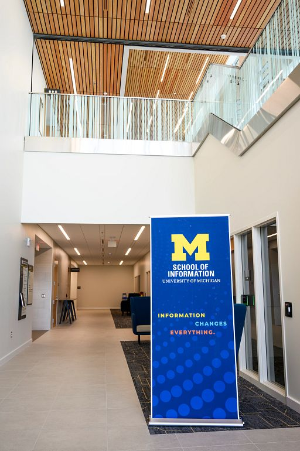
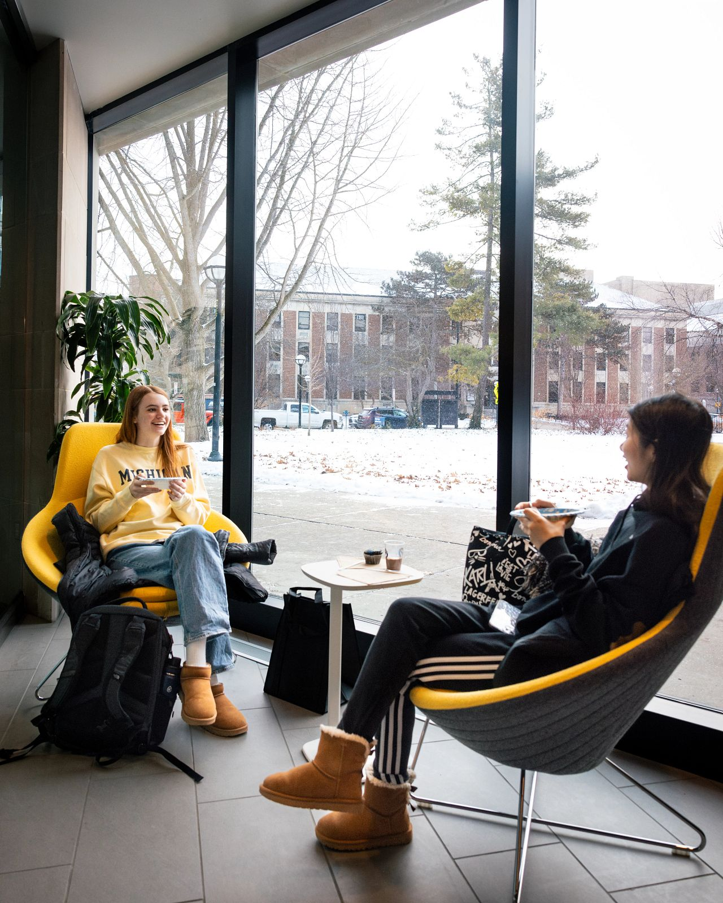
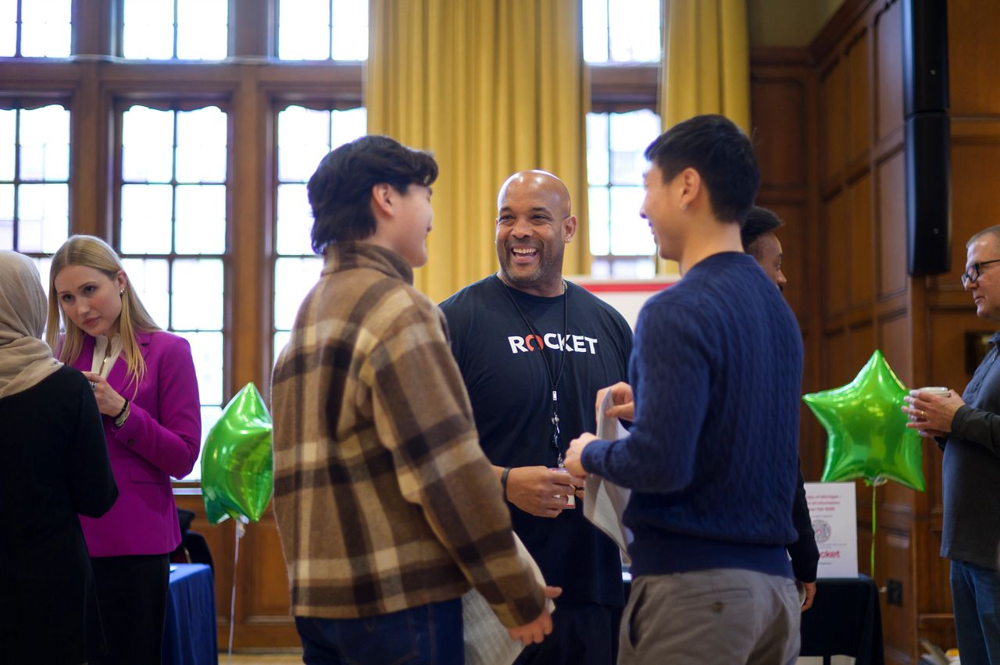
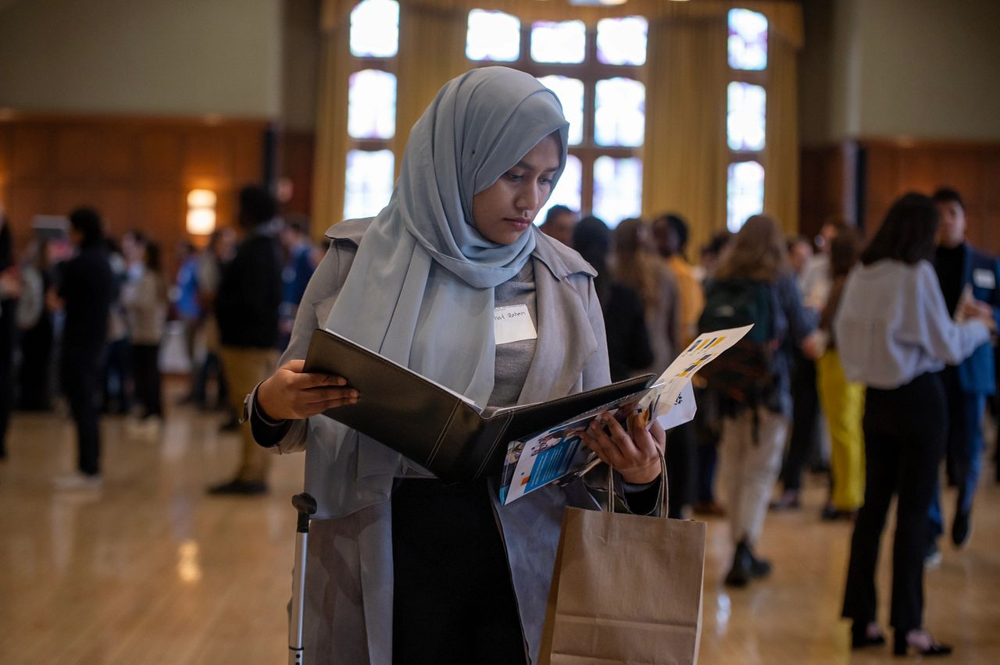
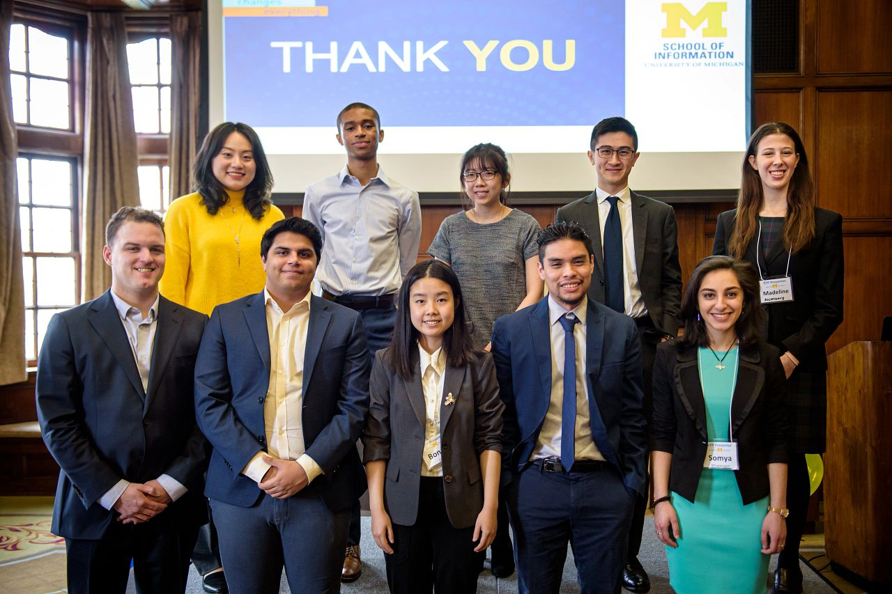

Building a Strategic Networking Plan
FIND ALUMNI
CDO Resources
Your network: UMSI & beyond
- Friends and peers (your own personal network)
- Faculty, supervisors, mentors (your own professional network)
- LinkedIn search
GET A RESPONSE
Don’t get discouraged by low response rate - average response rate to “cold messages” is around 20%. Each contact you connect with is an important and valuable addition to your network!
DO:
- Keep it short: demonstrate that you respect their time
- Establish a time frame: it’s easier to say yes to 20 minute coffee chat in the next 2 weeks than an undefined time commitment
- Personalize the message: convey your respect & value for them as an individual
DON’T:
- Do NOT ask for any information that is readily available online
- NEVER send your resume first. Always ask for permission
- Do NOT begin by asking for a referral - build the relationship first
- NEVER ask for a job!
Email Template
Planning an Informational Interview
An informational interview is an informal conversation with someone working in an area that interests you who will give you information and advice.
Things need to prepare:
Ask yourself (and have answers for) the “big” questions:
- “Tell me about yourself.”
- “Why are you interested in our company?”
- “Why are you interested in the industry/career pathway?”
- Research the person, company, and industry.
- Prepare questions to ask. - Use the TIARA method!
TIARA Method
TIARA is a proven systematic approach to build likeability with other people and your guide for the Q&A portion of any informational interview.
- Trends: Try to make trend questions specific to the company, industry or function for the person you are interviewing.
- Insight: Insight questions slowly bring the interview down to a personal level. Ask your interviewee about their specific experiences, day-to-day work, and career pathway.
- Advice: Asking for advice brings the conversation back to you.
- Resources: Ask for tools, blogs, websites, and other resources that the interviewee can recommend. This begins to close your conversation while giving you reasons & opportunities to follow up with your interviewee later!
- Assignments: Asking “assignment” questions can give you another reason to follow up with your interviewee and show your dedication to the field.
Career Fair Preparation
Strategies for standing out at the Career Fair
-
Pitch Yourself Effectively
- Dress for success!
- Be prepared to talk about yourself
- Have a resume ready
-
Communicate Effectively
Verbal
- Wait to speak until there is a pause. Do not talk over others!
- Speak loud enough to be heard.
- Be aware of pace. We tend to speed up when nervous!
- Be aware of industry jargon. Only use field terminology if you are certain your listener will understand it.
-
Non-verbal
- Offer handshakes, but be aware that not everyone will want to shake hands! Respect boundaries (including your own).
- Strive for strong eye contact about ⅔ of the time.
- Smiles are a universal symbol of “hello”!
- Remove distractions, and silence your phone.
- Liven the discussion with complimentary hand gestures and head nods.
-
Know the Employer(s)
- Know something about the company - show you’ve done your research!
- Have thoughtful questions prepared.
- Show energy and enthusiasm for their work
- Ultimate stand-out move: Have applied already!
Strategies for following up after the Career Fair
- Be sure to acquire contact information for each company you visit.
- Connect with recruiters via LinkedIn ASAP (when you’re on the top of their mind).
- Send a Thank You Email at least 1-2 days after the fair.
- Mention your interest, qualifications, and excitement for the application process.